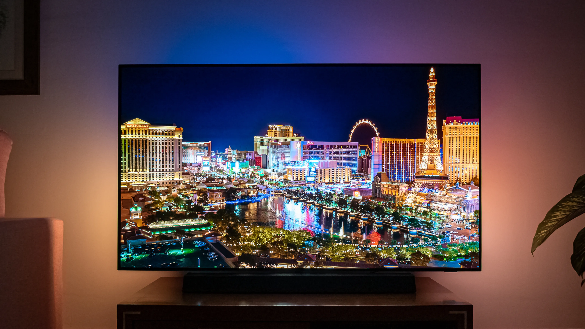

Television
¿Que es la television?, ¿cuando se invento la televisión?, ¿Cuando llego a España?....aquí las respuestas a todas estas preguntas
¿Qué es la televisión?
La televisión es un sistema para la transmisión y recepción de imágenes y sonidos a distancia que simulan movimientos, que emplea un mecanismo de difusión.
El término televisión se refiere a todos los aspectos de transmisión y programación de televisión. A veces se abrevia como TV. La transmisión puede ser efectuada por medio de ondas de radio, por redes de televisión por cable, televisión por satélite o por IPTV, que son las que existen en modalidades de señal abierta y televisión restringida (televisión por suscripción). El receptor de las señales es el televisor aunque también recibe el nombre de "televisión", y se suele abreviar como "tele". La abreviatura común de televisión es "TV".
¿Cuando se invento la televisión?
Nació en Londres, concreamete en Soho. La primera demostración pública de un sistema de televisión se produjo en el 1926.
Fue inventada por John Logie Baird (1888-1946), nació en Helensburg, Escocia. Estudió ingeniería eléctrica en el Real Cole- gio. En 1922, investigó la posibilidad de transmitir imágenes a distancia, consumando su proyecto en la demostración de su trabajo final en el 1926, cno la aprición del primer prototipo de televisión.
¿Cuando llegó la televisión en España?
Inició su actividad regular el 28 de octubre de 1956, con el inicio de emisiones de su primera cadena. Hasta el 1 de enero de 2007.
La televisión en España, es el principal medio de comunicación. En 2005, un 99,6% de viviendas españolas disponía de al menos un aparato de televisión. En el periodo 2005-2019, la cifra cayó ligeramente hasta el 98,5%. Pese a ello, sigue siendo el medio elegido por los ciudadanos para la información y el entretenimiento. Desde sus inicios ha sufrido diversas modificaciones tecnológicas y de regulación legal.
La televisión a lo largode la historia
En 1920
Supuso el inicio de lo que conocemos como televisión, esta televisión no era totalmente eléctrica , ya que contaba con un componente mecánico. Como se puede observar en la imagen, tenía una caja muy grande y una pantalla muy pequeña. Cuando se pensó en cómo transmitir una imagen usando ondas de radio. Los ingenieros comenzaron a inventar prototipos de televisores, luego comenzó la producción de televisores, y se puede ver cómo los diseñadores e ingenieros han perfeccionado los televisores desde su invención hasta el día de hoy.
En 1990
La imagen se proyecta desde la parte de atrás de la pantalla. El proyector se encuentra en la base del mueble, mediante un sistema de espejos la imagen es conducida hacia la pantalla. Estos televisores se usaron hasta el cambio de siglo, sobre todo para el cine en casa, pero quedaron obsoletos cuando otros modelos nuevos eran mucho más completos y pequeños
A partir del 2010
Surgen las smart-tv y las pantallas planas de LED, una versión refinada de las LCD y plasma, esta tecnología no es solamente usada para los televisores, si no que es empleada en muchísimos ámbitos relacionados con la tecnología y que deban servirse de una pantalla
El futuro de la televisión
Sus expectativas de crecimiento para los próximos años invitan a pensar que se trata de un dispositivo que se hará más y más masivo con el paso del tiempo. De hecho, según Strategy Analytics, el 51% de los hogares del mundo (1.100 millones) tendrá una smart TV en 2026. Será posible extender, doblar y retorcer el panel sin que la imagen que está siendo mostrada sufra distorsión y sin que el propio panel sufra daño, por lo menos si lo hacemos 10.000 veces o menos. También han comentado que las pantallaa seran resistente a impactos y que estaran fabricada con un sustrato especial de silicona similar al que se usa en las actuales lentes de contacto, lo que les dara esas buenas propiedades elásticas.